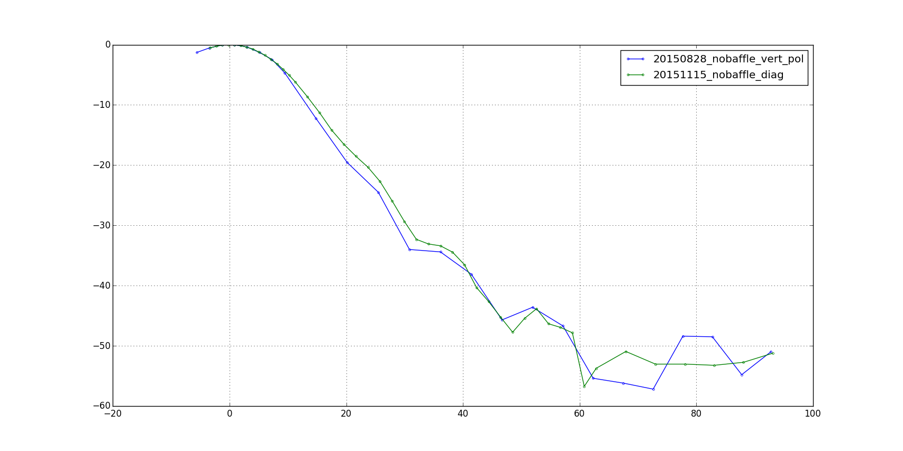
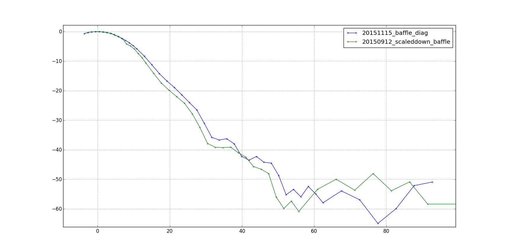
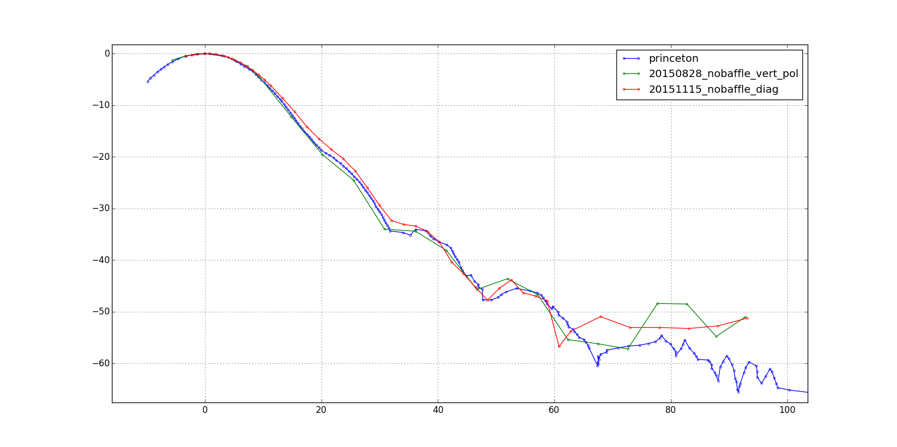

Results of a baffle off/on beam map on the roof of WERC last friday. We raised the horn and the source higher than before in order to reduce reflections from the barrier. Dynamic range is as good as it was at LASR, however the same 28 deg baffle we had settled on seems to have a diminshed effect.
I believe this is due to the choice of H-Pol - since the polarity is parallel to the ground, the reflected wave is stronger than if the polarity were vertical (see here). This necessitates another beam map in vert. pol.
Comparison of the vert. pol LASR profile with the H-pol WERC profile. "Diag" refers to the orientation of the source-to-ant axis relative to the ledge, not the polarization axis. Reflections are clearly present out to 40 deg (vertical error bars are on the order of 0.1 dB).
|  |
Comparison of the LASR vert. pol baffle profile to the WERC H-pol baffle profile. Again it looks as if reflections are present out to high angles, by a more or less constant amount. Note that the frequency drift outliers are no longer an issue due to clock synching the source and the analyzer.
|  |
Comparison of the LASR and WERC profiles to the Princeton dataset. The features seem to match, but the H-Pol trial is systematically higher power.
|  |
{kind=link}
{kind=link}
{kind=link}